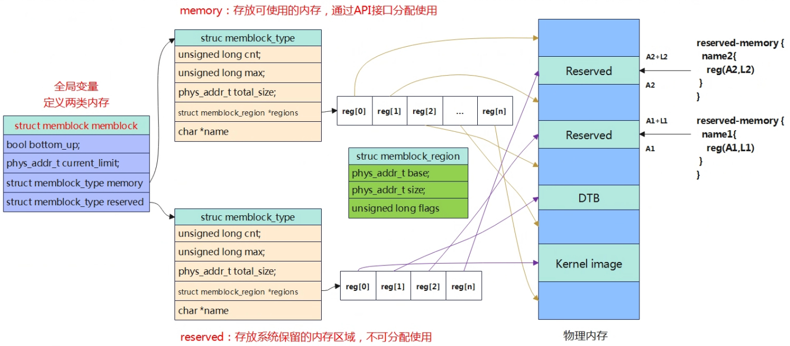

恒等映射与内核镜像映射__create_page_tables

- preserve_boot_args：保持启动参数到boot_args[]数组
- set_cpu_boot_maode_flag：设置关于cpu boot相关的全局变量
- __create_page_tables：创建恒等映射页表，内核映像映射页表
- __cpu_setup：为打开mmu做一些cpu相关的初始化
- __primary_switch：启动mmu，并跳转start_kernel()函数
恒等映射
（text：__idmap_text_start~__idmap_text_end/data：idmap_pg_dir~idmap_pg_end）
一旦启动MMU就需要使用虚拟地址，现代处理器大多数是多级流水线，处理器会提前预取多条指令到流水线中，打开MMU时，这些指令都是物理地址预取的；在MMU开启后，将以虚拟地址访问，这样就会出错，所以引入了“恒等映射”，即在过渡阶段的代码，虚拟地址和物理地址相等。恒等映射完成后，就启动MMU，进入虚拟地址访问阶段。恒等映射的代码在 __idmap_text_start~__idmap_text_end，可以从System.map文件中查询到。
kernel/build/System.map
ffffffc00899b000 T __idmap_text_start
ffffffc00899b000 T init_kernel_el
ffffffc00899b00c t init_el1
ffffffc00899b034 t init_el2
ffffffc00899b1e8 t __cpu_stick_to_vhe
ffffffc00899b1f8 t set_cpu_boot_mode_flag
ffffffc00899b21c T secondary_holding_pen
ffffffc00899b240 t pen
ffffffc00899b254 T secondary_entry
ffffffc00899b260 t secondary_startup
ffffffc00899b27c t __secondary_switched
ffffffc00899b310 t __secondary_too_slow
ffffffc00899b31c T __enable_mmu
ffffffc00899b37c T __cpu_secondary_check52bitva
ffffffc00899b380 t __no_granule_support
ffffffc00899b3a4 t __relocate_kernel
ffffffc00899b3ec t __primary_switch
ffffffc00899b428 t enter_vhe
ffffffc00899b460 T cpu_resume
ffffffc00899b488 T cpu_do_resume
ffffffc00899b52c T idmap_cpu_replace_ttbr1
ffffffc00899b560 t __idmap_kpti_flag
ffffffc00899b564 T idmap_kpti_install_ng_mappings
ffffffc00899b5a0 t do_pgd
ffffffc00899b5b8 t next_pgd
ffffffc00899b5c8 t skip_pgd
ffffffc00899b608 t walk_puds
ffffffc00899b610 t next_pud
ffffffc00899b614 t walk_pmds
ffffffc00899b61c t do_pmd
ffffffc00899b634 t next_pmd
ffffffc00899b644 t skip_pmd
ffffffc00899b654 t walk_ptes
ffffffc00899b65c t do_pte
ffffffc00899b680 t skip_pte
ffffffc00899b690 t __idmap_kpti_secondary
ffffffc00899b6d8 T __cpu_setup
ffffffc00899b7dc T __idmap_text_end
恒等映射目的就是为__idmap_text_start~__idmap_text_end这段代码创建一个映射页表，使其虚拟地址和物理地址是相等的。在vmlinux.lds.S中，事先已经分配了IDMAP_DIR_SIZE的空间用于存储页表，通常器页表为3个连续的4KB页面，分别对于PGD,PUD,PMD页表，这里没有使用PTE，所以粒度是2MB的大小。
arch/arm64/kernel/vmlinux.lds.S
idmap_pg_dir = .;
. += IDMAP_DIR_SIZE;
idmap_pg_end = .;
粗粒度的内核映像映射
（text: kernel_text / data：init_pg_dir~init_pg_end）
之所以要创建第二个页表，是因为cpu刚启动时，物理内存一般都在低地址（不过超过256TB），恒等映射的地址实际也在用户空间，即MMU启用后idmap_pg_dir会填入TTBR0，而内核空间链接地址（虚拟地址）都是在高地址，需要填入TTBR1，因此需要再创建一张表，映射整个内核镜像，且虚拟地址空间是再高地址0xffff xxxx xxxx xxxx
arch/arm64/kernel/head.S
/*
* Map the kernel image (starting with PHYS_OFFSET).
*/
///调用map_memory宏建立整个内核镜像代码段 的映射页表；
/**************************************************************************
* 为什么要建第二张表？
* CPU刚启动时，物理内存一般都在低地址(不会超过256T大小)，恒等映射的地址实际在用户空间了，
* 即MMU启用后idmap_pg_dir会填入TTBR0;
* 而内核空间的链接地址都是在高地址(内核空间在高地址)，需要填入TTBR1；
* 因此，这里再建一张表，映射整个内核镜像，且虚拟地址空间是在高地址区0xffffxxxx xxxx xxxx
* 注：init_pg_dir和idmap_pg_dir两个页表映射区别：
* (1)init_pg_dir映射的虚拟地址在高位0xffff xxxx xxxx xxxx;
* idmap_pg_dir映射的虚拟地址在低位0x0000 xxxx xxxx xxxx;
* MMU启用后，init_pg_dir填入TTBR1,idmap_pg_dir填入TTBR0；
* (2)init_pg_dir映射大小是整个内核镜像，idmap_pg_dir映射2M, 只是内存访问过渡，成功开启MMU即可；
***************************************************************************/
adrp x0, init_pg_dir
mov_q x5, KIMAGE_VADDR // compile time __va(_text)
add x5, x5, x23 // add KASLR displacement
mov x4, PTRS_PER_PGD
adrp x6, _end // runtime __pa(_end)
adrp x3, _text // runtime __pa(_text)
sub x6, x6, x3 // _end - _text
add x6, x6, x5 // runtime __va(_end)
map_memory x0, x1, x5, x6, x7, x3, x4, x10, x11, x12, x13, x14
fixmap映射
先创建好页表，建立好虚拟地址到物理地址的映射关系。
Linux内核要访问物理内存，一旦开启MMU后，就只能通过虚拟地址查询页表找到物理地址进行访问，上一章节中建立恒等映射和粗粒度内核映像映射的页表，因此只能保证内核镜像正常访问。如果要解析DTB，访问设备IO等依然是无法访问的，因为查询不到对应的页表。因此内核引入了fixmap机制，就是事先分配一段虚拟地址空间，然后给定其虚拟地址创建好页表，页表中的表项最后一级指向的物理页帧号先不填充，等到实际要访问那段物理内存后再将其填充，内后通过fixmap这段虚拟地址范围就可以通过查询页表访问到物理内存。 Fixmap最关键要实现的目的就是将一段空间的虚拟地址与物理地址对应上，linux内核通过虚拟地址访问到物理空间，那既然是通过虚拟地址访问到物理地址，那必须构建填充这段虚拟地址到物理地址的页表，这样Linux内核经过MMU利用查找页表找到对应的物理地址进行访问。
fixmap空间分类
Fixmap是一段固定范围的虚拟地址，在其在编译的时候就确定好了。下面是添加一段打印可以查看FIXMAP区域的各小段的地址范围。
void __init early_fixmap_init(void)
{
pgd_t *pgdp;
p4d_t *p4dp, p4d;
pud_t *pudp;
pmd_t *pmdp;
unsigned long addr = FIXADDR_START;
pgdp = pgd_offset_k(addr);
p4dp = p4d_offset(pgdp, addr);
printk(\"FIX_HOLE :0x%lx\\n\",__fix_to_virt(FIX_HOLE));
printk(\"FIX_FDT_END :0x%lx\\n\",__fix_to_virt(FIX_FDT_END));
printk(\"FIX_FDT :0x%lx\\n\",__fix_to_virt(FIX_FDT));
printk(\"FIX_EARLYCON_MEM_BASE:0x%lx\\n\",__fix_to_virt(FIX_EARLYCON_MEM_BASE));
printk(\"FIX_BTMAP_END :0x%lx\\n\",__fix_to_virt(FIX_BTMAP_END));
printk(\"FIX_BTMAP_BEGIN :0x%lx\\n\",__fix_to_virt(FIX_BTMAP_BEGIN));
printk(\"FIX_PTE :0x%lx\\n\",__fix_to_virt(FIX_PTE));
printk(\"FIX_PMD :0x%lx\\n\",__fix_to_virt(FIX_PMD));
printk(\"FIX_PUD :0x%lx\\n\",__fix_to_virt(FIX_PUD));
printk(\"FIX_PGD :0x%lx\\n\",__fix_to_virt(FIX_PGD));
printk(\"FIXADDR_START~TOP :0x%lx - 0x%lx (%6ld KB)\\n\",
FIXADDR_START,FIXADDR_TOP,(FIXADDR_TOP-FIXADDR_START) >> 10);
.......
}
[ 0.000000] FIX_HOLE :0xfffffffdfe000000 //0x000007FFFFFFEFF0
[ 0.000000] FIX_FDT_END :0xfffffffdfdfff000
[ 0.000000] FIX_FDT :0xfffffffdfdc00000 //0x000007FFFFFFEFEE
[ 0.000000] FIX_EARLYCON_MEM_BASE:0xfffffffdfdbff000
[ 0.000000] FIX_BTMAP_END :0xfffffffdfdbf9000
[ 0.000000] FIX_BTMAP_BEGIN :0xfffffffdfda3a000
[ 0.000000] FIX_PTE :0xfffffffdfda39000
[ 0.000000] FIX_PMD :0xfffffffdfda38000
[ 0.000000] FIX_PUD :0xfffffffdfda37000
[ 0.000000] FIX_PGD :0xfffffffdfda36000 //0x000007FFFFFFEFED
[ 0.000000] FIXADDR_START~TOP :0xfffffffdfdbf9000 - 0xfffffffdfe000000 ( 4124 KB)
上面0xfffffffdfdbf9000 - 0xfffffffdfe000000这段虚拟地址范围就是fixed map区域，这段区域可以通过FIXADDR_START和FIXADDR_TOP来确定。Fixmap虚拟地址平均分成两个部分，两个部分permanent fixed addresses和temporary fixed addresses。permanent fixed addresses是永久映射，temporary fixed addresses是临时映射。永久映射是指在建立的映射关系在kernel阶段不会改变，仅供特定模块一直使用。临时映射就是模块使用前创建映射，使用后解除映射。fixmap区域又被继续细分，分配给不同模块使用。kernel中定义枚举类型作为index，根据index可以计算在fixmap区域的虚拟地址。

arch/arm64/include/asm/fixmap.h
enum fixed_addresses {
FIX_HOLE,
/*
* Reserve a virtual window for the FDT that is 2 MB larger than the
* maximum supported size, and put it at the top of the fixmap region.
* The additional space ensures that any FDT that does not exceed
* MAX_FDT_SIZE can be mapped regardless of whether it crosses any
* 2 MB alignment boundaries.
*
* Keep this at the top so it remains 2 MB aligned.
*/
#define FIX_FDT_SIZE (MAX_FDT_SIZE + SZ_2M)
FIX_FDT_END,
FIX_FDT = FIX_FDT_END + FIX_FDT_SIZE / PAGE_SIZE - 1,
FIX_EARLYCON_MEM_BASE,
FIX_TEXT_POKE0,
#ifdef CONFIG_ACPI_APEI_GHES
/* Used for GHES mapping from assorted contexts */
FIX_APEI_GHES_IRQ,
FIX_APEI_GHES_SEA,
#ifdef CONFIG_ARM_SDE_INTERFACE
FIX_APEI_GHES_SDEI_NORMAL,
FIX_APEI_GHES_SDEI_CRITICAL,
#endif
#endif /* CONFIG_ACPI_APEI_GHES */
#ifdef CONFIG_UNMAP_KERNEL_AT_EL0
FIX_ENTRY_TRAMP_TEXT3,
FIX_ENTRY_TRAMP_TEXT2,
FIX_ENTRY_TRAMP_TEXT1,
FIX_ENTRY_TRAMP_DATA,
#define TRAMP_VALIAS (__fix_to_virt(FIX_ENTRY_TRAMP_TEXT1))
#endif /* CONFIG_UNMAP_KERNEL_AT_EL0 */
__end_of_permanent_fixed_addresses,
/*
* Temporary boot-time mappings, used by early_ioremap(),
* before ioremap() is functional.
*/
#define NR_FIX_BTMAPS (SZ_256K / PAGE_SIZE)
#define FIX_BTMAPS_SLOTS 7
#define TOTAL_FIX_BTMAPS (NR_FIX_BTMAPS * FIX_BTMAPS_SLOTS)
FIX_BTMAP_END = __end_of_permanent_fixed_addresses,
FIX_BTMAP_BEGIN = FIX_BTMAP_END + TOTAL_FIX_BTMAPS - 1,
/*
* Used for kernel page table creation, so unmapped memory may be used
* for tables.
*/
FIX_PTE,
FIX_PMD,
FIX_PUD,
FIX_PGD,
__end_of_fixed_addresses
};
#define FIXADDR_SIZE (__end_of_permanent_fixed_addresses << PAGE_SHIFT)
#define FIXADDR_START (FIXADDR_TOP - FIXADDR_SIZE)
fixmap初始化
前面描述了，fixmap就是让一段固定的虚拟地址空间与一段物理空间建立映射，以便linux内核通过虚拟地址才能访问到对应物理地址的空间数据，虚拟地址到物理地址的转换是通过mmu查询页表得来的，因此需要构建填充虚拟地址到物理地址转换的页表。在linux内核中，页表存储通过定义了3个全局数组bm_pud,bm_pmd,bt_pte来存储。因此early_fixmap_init的目的来填充这几个数组（页表）。
static pte_t bm_pte[PTRS_PER_PTE] __page_aligned_bss;
static pmd_t bm_pmd[PTRS_PER_PMD] __page_aligned_bss __maybe_unused;
static pud_t bm_pud[PTRS_PER_PUD] __page_aligned_bss __maybe_unused;
没有建立PGD，PGD在swapper_pg_dir中，在内核镜像的数据段
PTRS_PER_PTE/PMD/PUD为页表entry的数目
#define PTRS_PER_PTE (1 << (PAGE_SHIFT - 3))
arch/arm64/mm/mmu.c
void __init early_fixmap_init(void)
{
pgd_t *pgd;
p4d_t *p4dp, p4d;
pud_t *pud;
pmd_t *pmd;
unsigned long addr = FIXADDR_START; （1）FIXADDR_START定义了fixedmap区域的起始地址。
pgdp = pgd_offset_k(addr);
p4dp = p4d_offset(pgdp, addr);//3级页表中p4dp=pgd
p4d = READ_ONCE(*p4dp);//读表项中的内容
（2）获取addr对应的pgd全局页表表项地址，页表是swapper_pg_dir的空间
if (CONFIG_PGTABLE_LEVELS > 3 &&
!(pgd_none(*pgd) || pgd_page_paddr(*pgd) == __pa_symbol(bm_pud))) {
pud = pud_offset_kimg(pgd, addr);
} else {
(3)因为是3级页表p4d_node=0，因此不会进入这里，也就是不会使用bm_pud
if (p4d_none(p4d))
__p4d_populate(p4dp, __pa_symbol(bm_pud), P4D_TYPE_TABLE);
pud = fixmap_pud(addr);
(4)获取addr在PUD页表项中的偏移地址，这里是3级页表，所以pud=pgdp
}
if (pud_none(*pud))
__pud_populate(pud, __pa_symbol(bm_pmd), PMD_TYPE_TABLE);
（5）将bm_pmd的物理地址写到pgd页表对应表项中
pmd = fixmap_pmd(addr);
（6）获取addr在对应页表中表项的地址（虚拟地址）。
__pmd_populate(pmd, __pa_symbol(bm_pte), PMD_TYPE_TABLE);
（7）将bm_pte的物理地址写到pmd页表中。
}

TIPS:当使用3级页表时，内核如何判断是否需要创建PUD页表？
arch/arm64/include/asm/pgtable-types.h
#if CONFIG_PGTABLE_LEVELS == 2
#include <asm-generic/pgtable-nopmd.h>
#elif CONFIG_PGTABLE_LEVELS == 3
#include <asm-generic/pgtable-nopud.h>
#elif CONFIG_PGTABLE_LEVELS == 4
#include <asm-generic/pgtable-nop4d.h>
#endif
从上可知，页表是3级页表时，包含的pud相关的头文件时#include
include/asm-generic/pgtable-nopud.h
static inline int p4d_none(p4d_t p4d) { return 0; } //直接返回0
static inline int p4d_bad(p4d_t p4d) { return 0; }
static inline int p4d_present(p4d_t p4d) { return 1; }
static inline void p4d_clear(p4d_t *p4d) { }
#define p4d_populate(mm, p4d, pud) do { } while (0)
#define p4d_populate_safe(mm, p4d, pud) do { } while (0)
#define set_p4d(p4dptr, p4dval) set_pud((pud_t *)(p4dptr), (pud_t) { p4dval })
static inline pud_t *pud_offset(p4d_t *p4d, unsigned long address)
{
return (pud_t *)p4d;
}
#define pud_offset pud_offset
#define pud_val(x) (p4d_val((x).p4d))
#define __pud(x) ((pud_t) { __p4d(x) })
#define p4d_page(p4d) (pud_page((pud_t){ p4d }))
#define p4d_pgtable(p4d) ((pud_t *)(pud_pgtable((pud_t){ p4d })))
#define pud_alloc_one(mm, address) NULL
#define pud_free(mm, x) do { } while (0)
#define pud_free_tlb(tlb, x, a) do { } while (0)
#undef pud_addr_end
#define pud_addr_end(addr, end) (end)
实际上，early_fixmap_init只是建立了一个映射的框架，实际的物理地址和虚拟地址的映射关系是没有填充的，这个需要实际使用的时候再去填充对应的pte entry。 bm_pud/bm_pmd/bm_pte是全局数组（全局数据段），该阶段访问这几个全局数组的虚拟地址能够可以通过mmu转化为物理地址，因为这几个变量是属于内核映像中，在上一章节中内核镜像中的所有包括数据段、代码段等都可以进行访问了，因此这几个全局数组的虚拟地址是不需要映射的。
fixmap相关函数
{kind=link}
#define pte_offset_phys(dir,addr) (pmd_page_paddr(READ_ONCE(*(dir))) + pte_index(addr) * sizeof(pte_t))
//查找虚拟地址对应PTE的物理地址（基地址），也就是对应PMD条目中的值。
#define pte_set_fixmap(addr) ((pte_t *)set_fixmap_offset(FIX_PTE, addr))
//获取addr（物理地址）对应的虚拟地址，其虚拟地址在FIX_PTE这个范围（建立映射）。
#define pte_set_fixmap_offset(pmd, addr) pte_set_fixmap(pte_offset_phys(pmd, addr))
//获取addr在PTE页表项的虚拟地址，其虚拟地址范围在FIX_PTE这个范围（建立映射）。
#define pte_clear_fixmap() clear_fixmap(FIX_PTE)
//清除FIX_PTE虚拟地址的映射
#define pmd_set_fixmap(addr) ((pmd_t *)set_fixmap_offset(FIX_PMD, addr))
#define pmd_set_fixmap_offset(pud, addr) pmd_set_fixmap(pmd_offset_phys(pud, addr))
#define pmd_clear_fixmap() clear_fixmap(FIX_PMD)
#define pud_set_fixmap(addr) ((pud_t *)set_fixmap_offset(FIX_PUD, addr))
#define pud_set_fixmap_offset(p4d, addr) pud_set_fixmap(pud_offset_phys(p4d, addr))
#define pud_clear_fixmap() clear_fixmap(FIX_PUD)
#define pgd_set_fixmap(addr) ((pgd_t *)set_fixmap_offset(FIX_PGD, addr))
#define pgd_clear_fixmap() clear_fixmap(FIX_PGD)
fixmap io映射
static void __iomem *prev_map[FIX_BTMAPS_SLOTS] __initdata;
static unsigned long prev_size[FIX_BTMAPS_SLOTS] __initdata;
static unsigned long slot_virt[FIX_BTMAPS_SLOTS] __initdata;
void __init early_ioremap_setup(void)
{
int i;
for (i = 0; i < FIX_BTMAPS_SLOTS; i++)
if (WARN_ON(prev_map[i]))
break;
for (i = 0; i < FIX_BTMAPS_SLOTS; i++)
slot_virt[i] = __fix_to_virt(FIX_BTMAP_BEGIN - NR_FIX_BTMAPS*i);
}
Ioremap的空间存放再slot_vir数组中，其虚拟地址空间每一个跨度为NR_FIX_BITMAPS。
实际进行IO映射的时候，会调用到__early_ioremap函数，在该函数中回去填充pte entry，这样虚拟地址和io设备的物理地址就匹配上了。
fixmap DTB映射
arch/arm64/kernel/setup.c
setup_machine_fdt->
void *__init fixmap_remap_fdt(phys_addr_t dt_phys, int *size, pgprot_t prot)
{
const u64 dt_virt_base = __fix_to_virt(FIX_FDT); //从FIXMAP中获取设备树的虚拟地址
int offset;
void *dt_virt;
/*
* Check whether the physical FDT address is set and meets the minimum
* alignment requirement. Since we are relying on MIN_FDT_ALIGN to be
* at least 8 bytes so that we can always access the magic and size
* fields of the FDT header after mapping the first chunk, double check
* here if that is indeed the case.
*/
BUILD_BUG_ON(MIN_FDT_ALIGN < 8);
if (!dt_phys || dt_phys % MIN_FDT_ALIGN)
return NULL;
/*
* Make sure that the FDT region can be mapped without the need to
* allocate additional translation table pages, so that it is safe
* to call create_mapping_noalloc() this early.
*
* On 64k pages, the FDT will be mapped using PTEs, so we need to
* be in the same PMD as the rest of the fixmap.
* On 4k pages, we\'ll use section mappings for the FDT so we only
* have to be in the same PUD.
*/
BUILD_BUG_ON(dt_virt_base % SZ_2M);
BUILD_BUG_ON(__fix_to_virt(FIX_FDT_END) >> SWAPPER_TABLE_SHIFT !=
__fix_to_virt(FIX_BTMAP_BEGIN) >> SWAPPER_TABLE_SHIFT);
offset = dt_phys % SWAPPER_BLOCK_SIZE;
dt_virt = (void *)dt_virt_base + offset;
/* map the first chunk so we can read the size from the header */
create_mapping_noalloc(round_down(dt_phys, SWAPPER_BLOCK_SIZE),
dt_virt_base, SWAPPER_BLOCK_SIZE, prot);
//根据提供的物理地址和虚拟地址设置页表entry，建立dbt物理地址到fixmap中虚拟地址的映射
if (fdt_magic(dt_virt) != FDT_MAGIC)
return NULL;
//获取dtb文件大小
*size = fdt_totalsize(dt_virt);
//DTB的大小不能超过2M
if (*size > MAX_FDT_SIZE)
return NULL;
//如果DTB文件结尾的地址空间超过了上面建立的2M地址范围，需要紧接这再映射2M地址空间。
if (offset + *size > SWAPPER_BLOCK_SIZE)
create_mapping_noalloc(round_down(dt_phys, SWAPPER_BLOCK_SIZE), dt_virt_base,
round_up(offset + *size, SWAPPER_BLOCK_SIZE), prot);
return dt_virt;
}
TIPS：如何打开linux内核pr_debug相关的打印
打开pr_debug的打印
（1）将Default console loglevel 设置到8
Kernel hacking
> printk and dmesg options
(8)Default console loglevel (1-15)
（2）在对应的模块上编译添加-DDEBUG宏
diff --git a/drivers/of/Makefile b/drivers/of/Makefile
index e0360a44306e..25bc584536b3 100644
--- a/drivers/of/Makefile
+++ b/drivers/of/Makefile
+ccflags-y :=-DDEBUG
{kind=link}
Memblock
Linux内核使用伙伴系统管理内存，在伙伴系统之前，内核通过memblock来管理。在系统启动阶段，使用memblock记录理内存的使用情况，可以分成好几块。 - 永久分配给系统内核：内核镜像占用的部分，如代码、数据段等；设备树DTB等 - 预留给外设的连续内存：如GPU/Camera/多核共享等需要预留大量连续内存。 - 其他部分：以上的剩余部分内存，需要进行内存管理。

Memblock将以上内存按功能划分为若干内存区，使用不同的类型存放在memory和reserved两个集合中，memory即动态内存，reserved即静态分配的内存。
获取物理内存大小
在设备树中，使用节点名称为memory来描述内存信息，如果系统中有多个内存范围，那么device tree中可能会创建多个内存节点，或者一个单独的内存节点通过reg属性指定内存的访问。
{kind=link}
假设一个64位系统具有以下的物理内存块： - RAM:起始地址0x0,长度0x80000000(2GB) - RAM：起始地址0x100000000,长度0x100000000(4GB) 方法一
memory@0 {
device_type = \"memory\";
reg = < 0x000000000 0x00000000 0x00000000 0x80000000
0x000000001 0x00000000 0x00000001 0x00000000>;
};
第一个整数（0x00000000）：表示物理地址的高32位。
第二个整数（0x00000000）：表示物理地址的低32位。在这个例子中，物理地址为0x00000000。
第三个整数（0x00000000）：表示大小的高32位。
第四个整数（0x80000000）：表示大小的低32位。在这个例子中，大小为0x80000000，即2GB。
第五个整数（0x00000001）：表示物理地址的高32位。
第六个整数（0x00000000）：表示物理地址的低32位。在这个例子中，物理地址为0x100000000。
第七个整数（0x00000001）：表示大小的高32位。
第八个整数（0x00000000）：表示大小的低32位。在这个例子中，大小为0x100000000，即4GB。
方法二
memory@0 {
device_type = \"memory\";
reg = < 0x000000000 0x00000000 0x00000000 0x80000000>;
};
memory@100000000 {
device_type = \"memory\";
reg = < 0x000000001 0x00000000 0x00000001 0x00000000>;
};
有些平台中在设备树中有时并没有去描述该节点，那是因为在uboot启动的时候会创建或改写该节点，实际的物理内存大小可能在boot0阶段就探测到了。
int fdt_fixup_memory_banks(void *blob, u64 start[], u64 size[], int banks)
{
int err, nodeoffset;
int len, i;
u8 tmp[MEMORY_BANKS_MAX * 16]; /* Up to 64-bit address + 64-bit size */
if (banks > MEMORY_BANKS_MAX) {
printf(\"%s: num banks %d exceeds hardcoded limit %d.\"
\" Recompile with higher MEMORY_BANKS_MAX?\\n\",
__FUNCTION__, banks, MEMORY_BANKS_MAX);
return -1;
}
err = fdt_check_header(blob);
if (err < 0) {
printf(\"%s: %s\\n\", __FUNCTION__, fdt_strerror(err));
return err;
}
/* find or create \"/memory\" node. */
nodeoffset = fdt_find_or_add_subnode(blob, 0, \"memory\");
if (nodeoffset < 0)
return nodeoffset;
err = fdt_setprop(blob, nodeoffset, \"device_type\", \"memory\",
sizeof(\"memory\"));
if (err < 0) {
printf(\"WARNING: could not set %s %s.\\n\", \"device_type\",
fdt_strerror(err));
return err;
}
for (i = 0; i < banks; i++) {
if (start[i] == 0 && size[i] == 0)
break;
}
banks = i;
if (!banks)
return 0;
for (i = 0; i < banks; i++)
if (start[i] == 0 && size[i] == 0)
break;
banks = i;
len = fdt_pack_reg(blob, tmp, start, size, banks);
err = fdt_setprop(blob, nodeoffset, \"reg\", tmp, len);
if (err < 0) {
printf(\"WARNING: could not set %s %s.\\n\",
\"reg\", fdt_strerror(err));
return err;
}
return 0;
所以，在设备树中找不到描述，可以在系统启动阶段在uboot阶段查看内存节点。
=> fdt list /memory
memory {
reg = <0x00000000 0x40000000 0x00000000 0x80000000>;
device_type = \"memory\";
};
物理地址起始：0x40000000
物理内存大小：0x80000000（2GB）
内核调用early_init_dt_scan_nodes扫描DTB，然后将物理内存同故宫memblock_add添加到memblock中进行管理。
drivers/os/fdt.c
void __init early_init_dt_scan_nodes(void)
{
int rc = 0;
/* Initialize {size,address}-cells info */
of_scan_flat_dt(early_init_dt_scan_root, NULL);
/* Retrieve various information from the /chosen node */
rc = of_scan_flat_dt(early_init_dt_scan_chosen, boot_command_line);
if (!rc)
pr_warn(\"No chosen node found, continuing without\\n\");
/* Setup memory, calling early_init_dt_add_memory_arch */
of_scan_flat_dt(early_init_dt_scan_memory, NULL);
early_init_dt_add_memory_arch(base, size);
memblock_add(base, size);
//从设备树中读取到物理内存的地址和大小，添加到memblock中
/* Handle linux,usable-memory-range property */
early_init_dt_check_for_usable_mem_range();
}
管理结构体

- 第一层：struct memblock，定义一个全局变量，用来维护所有的物理内存；
- 第二层：struct memblock_type，系统中内存类型，包括可分配使用的内存和保留的内存；
- 第三层：struct memblock_region，描述具体内存区域，包含在struct memblock_type中的regions数组中，最多存放128个。
mm/memblock.c
static struct memblock_region memblock_memory_init_regions[INIT_MEMBLOCK_REGIONS] __initdata_memblock;
static struct memblock_region memblock_reserved_init_regions[INIT_MEMBLOCK_RESERVED_REGIONS] __initdata_memblock;
struct memblock memblock __initdata_memblock = {
.memory.regions = memblock_memory_init_regions,
.memory.cnt = 1, /* empty dummy entry */
.memory.max = INIT_MEMBLOCK_REGIONS,
.memory.name = \"memory\",
.reserved.regions = memblock_reserved_init_regions,
.reserved.cnt = 1, /* empty dummy entry */
.reserved.max = INIT_MEMBLOCK_RESERVED_REGIONS,
.reserved.name = \"reserved\",
.bottom_up = false,
.current_limit = MEMBLOCK_ALLOC_ANYWHERE,
};
定义了memblock全局变量，因此是不需要初始化的，在定义的时候就进行了初始化。regions指向的也是静态全局的数组，数组的大小为INIT_MEMBLOCK_REGIONS（128），在实际代码中，可以看到，当超过这个数组时，这个数组将会进行动态扩大。
memblock主要接口函数
Memblock系统提供一些列接口供内核模块使用，包括内存区块的添加、预留、内存申请等功能。 - memblock_add:将内存块添加到可用内存集合，添加新的内存块区域到memblock.memory中。 - memblock_reserve:将内存块添加到预留内存集合 - memblock_phys_alloc:用于申请memblock中的物理内存 - memblock_remove:删除内存块区域 - memblock_alloc:分配内存 - memblock_free:释放内存
memblock_add
memblock_add函数将物理内存区块添加到可用内存集合中，结构管理图如下
{kind=link}
memblock_reserve
与memblock_add类似
memblock_alloc
void *memblock_alloc(phys_addr_t size, phys_addr_t align)
memblock_alloc_try_nid
memblock_alloc_internal
memblock_alloc_range_nid
memblock_find_in_range_node
phys_to_virt(alloc)
最终调用memblock_find_in_range_node实现物理内存的分配。memblock_phys_alloc函数与该函数类似，区别是memblock_alloc在分配后会会调用phys_to_virt将物理地址转化为虚拟地址，而memblock_phys_alloc不会。
Arm64 memblock init
物理内存都添加到系统之后，会调用arm64_memblock_init对整个物理内存进行整理，主要的工作就是remove掉一些no-map区域（不归内核管理），同时保留一些关键区域，如内核镜像区，dtb中reserved的内存节点。 
{kind=link}
上图中，浅绿色的就是reserved部分，不能被分配使用，而剩下的部分就可以通过调用上小章节中的函数去使用内存了。
小结： （1）系统通过memblock以数组memory type的方式记录物理内存空间，数组中每一个内存区域描述了一段内存信息，包括base，size，node id等。 （2）在memblock信息中，已经被使用或者被内核定义需要保留的区域，会存储在reserved 数组中。 （3）memory type数组中并不是代表整个内核系统的内存空间，因为股份驱动会保留一段内存区域供自己单独使用，其在dts中具有no-map熟悉的reserved-memory节点，不会由内核创建地址映射。 （4）可以通过内核调试节点/sys/kernel/debug/memblockk进行查询相关信息
paging_init
上一章节中，物理内存通过该memblock模块添加进了系统，但是此时仍然只有DTB和image所在的两端物理内存可以访问，其他物理内存还访问不了，因为其还没有建立其页表。即使可以通过memblock_alloc分配物理内存，但是也不能访问，因为其虚拟地址对应的页表没有生成，只有是创建了页表才能通过虚拟地址转化访问物理地址。
void __init paging_init(void)
{
pgd_t *pgdp = pgd_set_fixmap(__pa_symbol(swapper_pg_dir));
//（1）获取一页内存用于构建PGD映射表，返回的是虚拟地址。
map_kernel(pgdp);
//（2）完成内核的映射，包括text,data,bss段等。
map_mem(pgdp);
//（3）将memblock子系统添加到物理内存进行映射
pgd_clear_fixmap();
cpu_replace_ttbr1(lm_alias(swapper_pg_dir));
//（4）切换页表，新建立页表内容替换swapper_pg_dir
init_mm.pgd = swapper_pg_dir;
memblock_free(__pa_symbol(init_pg_dir),
__pa_symbol(init_pg_end) - __pa_symbol(init_pg_dir));
//（5）新的映射更新完成，释放掉临时空间
memblock_allow_resize();
}
构建PGD映射表
页目录直接使用的是swapper_pg_dir，一个条目映射的空间本身就很大，一个entry对应范围有512GB。
arch/arm64/include/asm/fixmap.h
enum fixed_addresses {
......
/*
* Used for kernel page table creation, so unmapped memory may be used
* for tables.
*/
FIX_PTE,
FIX_PMD,
FIX_PUD,
FIX_PGD,
......
};
pgd_t *pgdp = pgd_set_fixmap(__pa_symbol(swapper_pg_dir));
#define pgd_set_fixmap(addr) ((pgd_t *)set_fixmap_offset(FIX_PGD, addr))
#define set_fixmap_offset(idx, phys) \\
__set_fixmap_offset(idx, phys, FIXMAP_PAGE_NORMAL)
#define __set_fixmap_offset(idx, phys, flags) \\
({ \\
unsigned long ________addr; \\
__set_fixmap(idx, phys, flags); \\
________addr = fix_to_virt(idx) + ((phys) & (PAGE_SIZE - 1)); \\
________addr; \\
})
arch/arm64/kernel/vmlinux.lds.S
swapper_pg_dir = .;
. += PAGE_SIZE;
swapper_pg_dir是实现分配的一段空间，处于内核镜像的data段。
通过__pa_symbol先将swapper_pg_dir转化为物理地址，然后与FIX_PGD地址范围进行映射，后续就可以通过虚拟地址FIX_PGD这段访问访问到swapper_pg_dir这块物理空间。

early_pgtable_alloc
对内核各个段、以及memblock管理的物理内存建立映射，在上一章节中已经获取到了PGD全局目录页表，但是接下来的PUD,PMD,PTE对应的页表是需要进行动态分配的，空间的分配可以使用memblock提供的函数进行分配，但是如何进行访问填充页表了？memblock分配空间内核是没法直接访问的，因为没有创建页表，没法通过查表的方式进行查找到物理地址。这个时候前面fixmap就发挥作用了，在fixmap章节中，已经创建了虚拟地址到物理地址的页表，有一段实际的虚拟地址对应的物理地址是待填充的，那就是FIX_PTE~FIX_PGD，所以就可以利用这段空间将memblock分配到的物理地址与FIX_PTE~FIX_PGD对应上，这样内核就可以通过虚拟地址进行访问了，就可以填充页表内容。

内核访问物理内存使用的都是虚拟地址，而硬件模块比如MMU等访问内存使用的是物理地址，不需要从虚拟地址到物理地址转换（否则就陷入循环了）。虚拟地址转为物理地址需要查找页表找到对应的物理地址，而这个页表需要进行填充（建立映射关系），因此内核在填充页表的时候，也是使用的虚拟地址访问。只要把各级页表填充好之后就可以了，最终MMU在翻译的时候就访问的是物理地址。
static phys_addr_t __init early_pgtable_alloc(int shift)
{
phys_addr_t phys;
void *ptr;
phys = memblock_phys_alloc_range(PAGE_SIZE, PAGE_SIZE, 0,
MEMBLOCK_ALLOC_NOLEAKTRACE);
//（1）先分配一块物理内存
ptr = pte_set_fixmap(phys);
//（2）将当前的物理内存与fixmap的虚拟地址进行映射，映射完成后，内核即可访问这段内存，用的是PTE这段，PGD,PUD,PMD用在哪里？
memset(ptr, 0, PAGE_SIZE);
pte_clear_fixmap();
return phys;
}
从上可以看出分配一个页表需要PAGE_SIZE的大小，也就等于一个物理页帧大小4KB。页表有512个条目，每个条目占用8字节。
内核镜像细粒度映射-map_kernel
Map_kernel主要完成内核中各个段的映射，包括text、rodata、init、data、bss等各个段。
static void __init map_kernel(pgd_t *pgdp)
map_kernel_segment(pgdp, _stext, _etext, text_prot, &vmlinux_text, 0,
VM_NO_GUARD);
map_kernel_segment(pgdp, __start_rodata, __inittext_begin, PAGE_KERNEL,
&vmlinux_rodata, NO_CONT_MAPPINGS, VM_NO_GUARD);
map_kernel_segment(pgdp, __inittext_begin, __inittext_end, text_prot,
&vmlinux_inittext, 0, VM_NO_GUARD); //.init
map_kernel_segment(pgdp, __initdata_begin, __initdata_end, PAGE_KERNEL,
&vmlinux_initdata, 0, VM_NO_GUARD);//.data
map_kernel_segment(pgdp, _data, _end, PAGE_KERNEL, &vmlinux_data, 0, 0); //.bss
启动日志
[ 0.000000] Virtual kernel memory layout:
[ 0.000000] modules : 0xffffffc000000000 - 0xffffffc008000000 ( 128 MB)
[ 0.000000] vmalloc : 0xffffffc008000000 - 0xfffffffdf0000000 ( 247 GB)
[ 0.000000] .text : 0xffffffc008080000 - 0xffffffc008a30000 ( 9920 KB)
[ 0.000000] .rodata : 0xffffffc008a30000 - 0xffffffc008d70000 ( 3328 KB)
[ 0.000000] .init : 0xffffffc008d70000 - 0xffffffc008ef0000 ( 1536 KB)
[ 0.000000] .data : 0xffffffc008ef0000 - 0xffffffc00900f008 ( 1149 KB)
[ 0.000000] .bss : 0xffffffc00900f008 - 0xffffffc009069920 ( 363 KB)
[ 0.000000] fixed : 0xfffffffdfdbf9000 - 0xfffffffdfe000000 ( 4124 KB)
[ 0.000000] PCI I/O : 0xfffffffdfe800000 - 0xfffffffdff800000 ( 16 MB)
[ 0.000000] vmemmap : 0xfffffffe00000000 - 0xffffffff00000000 ( 4 GB maximum)
[ 0.000000] 0xfffffffe00000000 - 0xfffffffe02000000 ( 32 MB actual)
[ 0.000000] memory : 0xffffff8000000000 - 0xffffff8080000000 ( 2048 MB)
[ 0.000000] PAGE_OFFSET : 0xffffff8000000000
[ 0.000000] PHYS_OFFSET : 0x 40000000
[ 0.000000] KIMAGE_VADDR : 0xffffffc008000000
static void __init map_kernel_segment(pgd_t *pgdp, void *va_start, void *va_end,
pgprot_t prot, struct vm_struct *vma,
int flags, unsigned long vm_flags)
{
phys_addr_t pa_start = __pa_symbol(va_start); //将虚拟地址转为物理地址
unsigned long size = va_end - va_start;
BUG_ON(!PAGE_ALIGNED(pa_start));
BUG_ON(!PAGE_ALIGNED(size));
__create_pgd_mapping(pgdp, pa_start, (unsigned long)va_start, size, prot,
early_pgtable_alloc, flags);
if (!(vm_flags & VM_NO_GUARD))
size += PAGE_SIZE;
vma->addr = va_start;
vma->phys_addr = pa_start;
vma->size = size;
vma->flags = VM_MAP | vm_flags;
vma->caller = __builtin_return_address(0);
vm_area_add_early(vma);
}
{kind=link}
线性映射-map_mem
完成对物理内存的映射，这部分的物理内存是同故宫memblock_add添加系统中的，函数中将会遍历memblock中的各个块，然后调用__map_memblock来完成实际的映射操作。
static void __init map_mem(pgd_t *pgdp)
{
......
memblock_mark_nomap(kernel_start, kernel_end - kernel_start);
//（1）不对设置了MEMBLOCK_NOMAP的标志映射
/* map all the memory banks */
for_each_mem_range(i, &start, &end) {
if (start >= end)
break;
/*
* The linear map must allow allocation tags reading/writing
* if MTE is present. Otherwise, it has the same attributes as
* PAGE_KERNEL.
*/
__map_memblock(pgdp, start, end, pgprot_tagged(PAGE_KERNEL),
flags);
}
//（2）遍历memblock中的各个块并完成内存的映射
}
遍历memblock.memory进行逐一映射。
static void __init map_mem(pgd_t *pgdp)
{
......
memblock_mark_nomap(kernel_start, kernel_end - kernel_start);
//（1）不对设置了MEMBLOCK_NOMAP的标志映射
/* map all the memory banks */
for_each_mem_range(i, &start, &end) {
if (start >= end)
break;
/*
* The linear map must allow allocation tags reading/writing
* if MTE is present. Otherwise, it has the same attributes as
* PAGE_KERNEL.
*/
__map_memblock(pgdp, start, end, pgprot_tagged(PAGE_KERNEL),
flags);
}
//（2）遍历memblock中的各个块并完成内存的映射
}
static void __init __map_memblock(pgd_t *pgdp, phys_addr_t start,
phys_addr_t end, pgprot_t prot, int flags)
{
__create_pgd_mapping(pgdp, start, __phys_to_virt(start), end - start,
prot, early_pgtable_alloc, flags);
}
Start是要映射的物理地址，__phys_to_virt(start)是要映射的虚拟地址，由此可见，这段空间是进行的线性映射。

__create_pgd_mapping
map_kernel与map_mem最终都会调用__create_pgd_mapping进行映射。

static void __create_pgd_mapping(pgd_t *pgdir, phys_addr_t phys,
unsigned long virt, phys_addr_t size,
pgprot_t prot,
phys_addr_t (*pgtable_alloc)(int),
int flags)
{
unsigned long addr, end, next;
pgd_t *pgdp = pgd_offset_pgd(pgdir, virt);
//获取要映射地址virt在PGD页表目录的表项对应的地址（虚拟地址），接下来将会进行填充内容（下一级页表的物理地址）。
/*
* If the virtual and physical address don\'t have the same offset
* within a page, we cannot map the region as the caller expects.
*/
if (WARN_ON((phys ^ virt) & ~PAGE_MASK))
return;
//让物理内存由原理的按字节计算位置改为按页计算位置
phys &= PAGE_MASK;
addr = virt & PAGE_MASK;
end = PAGE_ALIGN(virt + size);//按PAGE对齐的方式算，结束地址多少。
do {
next = pgd_addr_end(addr, end);
//找到当前PGD的结束地址，一般来说PGD entry只有一个，所以这里的循环只会有依次。原因是一个PGD有512个条目，每个条目表示512GB（2^39）的虚拟地址空间。
alloc_init_pud(pgdp, addr, next, phys, prot, pgtable_alloc,
flags); //初始化该PGD条目对应的PUD
phys += next - addr;
} while (pgdp++, addr = next, addr != end);
}
alloc_init_pud
static void alloc_init_pud(pgd_t *pgdp, unsigned long addr, unsigned long end,
phys_addr_t phys, pgprot_t prot,
phys_addr_t (*pgtable_alloc)(int),
int flags)
{
unsigned long next;
pud_t *pudp;
p4d_t *p4dp = p4d_offset(pgdp, addr);
//获取第四级页表中页表项的地址，MR527是三级页表，所以p4dp=pgdp。
p4d_t p4d = READ_ONCE(*p4dp); //读取表项中的内容，实际读的就是PGD目录（3级）
//判断表项内容是否为空，如果为空需要进行PUD，这里表项不为空，因为是3级页表，所以不需要创建PUD
if (p4d_none(p4d)) {
p4dval_t p4dval = P4D_TYPE_TABLE | P4D_TABLE_UXN;
phys_addr_t pud_phys;
if (flags & NO_EXEC_MAPPINGS)
p4dval |= P4D_TABLE_PXN;
BUG_ON(!pgtable_alloc);
pud_phys = pgtable_alloc(PUD_SHIFT);
__p4d_populate(p4dp, pud_phys, p4dval);
p4d = READ_ONCE(*p4dp);
}
BUG_ON(p4d_bad(p4d));
/*
* No need for locking during early boot. And it doesn\'t work as
* expected with KASLR enabled.
*/
if (system_state != SYSTEM_BOOTING)
mutex_lock(&fixmap_lock);
pudp = pud_set_fixmap_offset(p4dp, addr);
//计算所在PUD（PGD）偏移表项的地址（虚拟地址），其地址（虚拟）空间在fixmap范围内FIX_PUD（FIX_PGD）范围内，因为要访问其物理空间，需要查询页表，所以使用之前创建好的页表，填充映射好后，可以直接访问。
do {
pud_t old_pud = READ_ONCE(*pudp);
next = pud_addr_end(addr, end);
//PUD起始和结束位置，大小是1GB。空间比较大，只循环一次。
/*
* For 4K granule only, attempt to put down a 1GB block
*/
if (use_1G_block(addr, next, phys) &&
(flags & NO_BLOCK_MAPPINGS) == 0) {
pud_set_huge(pudp, phys, prot);
/*
* After the PUD entry has been populated once, we
* only allow updates to the permission attributes.
*/
BUG_ON(!pgattr_change_is_safe(pud_val(old_pud),
READ_ONCE(pud_val(*pudp))));
} else {
alloc_init_cont_pmd(pudp, addr, next, phys, prot,
pgtable_alloc, flags);//循环在各个PUD映射表现建立对应PMD页表
BUG_ON(pud_val(old_pud) != 0 &&
pud_val(old_pud) != READ_ONCE(pud_val(*pudp)));
}
phys += next - addr;
} while (pudp++, addr = next, addr != end);
pud_clear_fixmap();
if (system_state != SYSTEM_BOOTING)
mutex_unlock(&fixmap_lock);
}
alloc_init_cont_pmd
static void alloc_init_cont_pmd(pud_t *pudp, unsigned long addr,
unsigned long end, phys_addr_t phys,
pgprot_t prot,
phys_addr_t (*pgtable_alloc)(int), int flags)
{
unsigned long next;
pud_t pud = READ_ONCE(*pudp);//获取PUD页表中addr对应的表项内容，也就是PMD页表地址
/*
* Check for initial section mappings in the pgd/pud.
*/
BUG_ON(pud_sect(pud));
//如果PUD页表为空，则分配一个页表，页表中的表项为创建512个。页表大小一个为4K，每个表项占8字节。
if (pud_none(pud)) {
pudval_t pudval = PUD_TYPE_TABLE | PUD_TABLE_UXN;
phys_addr_t pmd_phys;
if (flags & NO_EXEC_MAPPINGS)
pudval |= PUD_TABLE_PXN;
BUG_ON(!pgtable_alloc);
pmd_phys = pgtable_alloc(PMD_SHIFT);
__pud_populate(pudp, pmd_phys, pudval);//将PMD页表的物理地址填充到映射地址对应的PUD（实际上是PGD，3级页表）表项中
pud = READ_ONCE(*pudp);
}
BUG_ON(pud_bad(pud));
do {
pgprot_t __prot = prot;
next = pmd_cont_addr_end(addr, end);
//一个PMD entry映射范围是2M，所以计算需要多少个entry。但是如果是连续的物理内存，init_pmd不是只初始化一个entry，而是一下初始化多个entry，多少个entry由CONT_PMDS。所以这里的地址范围next的距离将是CONT_PMDS*PMD_SIZE。
/* use a contiguous mapping if the range is suitably aligned */
if ((((addr | next | phys) & ~CONT_PMD_MASK) == 0) &&
(flags & NO_CONT_MAPPINGS) == 0)
__prot = __pgprot(pgprot_val(prot) | PTE_CONT);
init_pmd(pudp, addr, next, phys, __prot, pgtable_alloc, flags);
//初始化PMD页表，创建下一级页表，同时将其物理地址填充到表项中。
phys += next - addr;
} while (addr = next, addr != end);
}
init_pmd
static void init_pmd(pud_t *pudp, unsigned long addr, unsigned long end,
phys_addr_t phys, pgprot_t prot,
phys_addr_t (*pgtable_alloc)(int), int flags)
{
unsigned long next;
pmd_t *pmdp;
pmdp = pmd_set_fixmap_offset(pudp, addr);
//获取映射地址addr对应PMD页表项的地址（虚拟地址），其地址范围在FIX_PMD中，因为访问物理内存也需要查询页表，那就将其物理地址映射到FIXMAP范围，就可以进行直接访问虚拟地址了。
do {
pmd_t old_pmd = READ_ONCE(*pmdp);//遍历PMD表项，
next = pmd_addr_end(addr, end);
//每个PMD的映射范围是2M，遍历需要多少个PTE。
/* try section mapping first */
if (((addr | next | phys) & ~PMD_MASK) == 0 &&
(flags & NO_BLOCK_MAPPINGS) == 0) {
pmd_set_huge(pmdp, phys, prot);
/*
* After the PMD entry has been populated once, we
* only allow updates to the permission attributes.
*/
BUG_ON(!pgattr_change_is_safe(pmd_val(old_pmd),
READ_ONCE(pmd_val(*pmdp))));
} else {
alloc_init_cont_pte(pmdp, addr, next, phys, prot,
pgtable_alloc, flags);
BUG_ON(pmd_val(old_pmd) != 0 &&
pmd_val(old_pmd) != READ_ONCE(pmd_val(*pmdp)));
}
phys += next - addr;
} while (pmdp++, addr = next, addr != end);
pmd_clear_fixmap();
}
static void alloc_init_cont_pte(pmd_t *pmdp, unsigned long addr,
unsigned long end, phys_addr_t phys,
pgprot_t prot,
phys_addr_t (*pgtable_alloc)(int),
int flags)
{
unsigned long next;
pmd_t pmd = READ_ONCE(*pmdp);//获得PTE映射表的头地址
BUG_ON(pmd_sect(pmd));
if (pmd_none(pmd)) {//如果没有该表则创建一个
pmdval_t pmdval = PMD_TYPE_TABLE | PMD_TABLE_UXN;
phys_addr_t pte_phys;
if (flags & NO_EXEC_MAPPINGS)
pmdval |= PMD_TABLE_PXN;
pte_phys = pgtable_alloc(PAGE_SHIFT);
__pmd_populate(pmdp, pte_phys, pmdval);
pmd = READ_ONCE(*pmdp);
}
do {
pgprot_t __prot = prot;
next = pte_cont_addr_end(addr, end);
//一个PTE entry映射范围是4K，所以计算需要多少个entry。但是如果是连续的物理内存，init_pmd不是只初始化一个entry，而是一下初始化多个entry，多少个entry由CONT_PTES。所以这里的地址范围next的距离将是CONT_PTES*PTE_SIZE。
/* use a contiguous mapping if the range is suitably aligned */
if ((((addr | next | phys) & ~CONT_PTE_MASK) == 0) &&
(flags & NO_CONT_MAPPINGS) == 0)
__prot = __pgprot(pgprot_val(prot) | PTE_CONT);
init_pte(pmdp, addr, next, phys, __prot);//初始化每一个PTE的表项记录，对应物理页帧
phys += next - addr;
} while (addr = next, addr != end);
}
init_pte
static void init_pte(pmd_t *pmdp, unsigned long addr, unsigned long end,
phys_addr_t phys, pgprot_t prot)
{
pte_t *ptep;
ptep = pte_set_fixmap_offset(pmdp, addr);//根据addr找到对应的PTE Entry位置
do {
pte_t old_pte = READ_ONCE(*ptep);
//读这个entry的值，一般来说新建的entry是没有valid的值的
set_pte(ptep, pfn_pte(__phys_to_pfn(phys), prot));
//将物理地址转换为页帧，然后写入PTE
/*
* After the PTE entry has been populated once, we
* only allow updates to the permission attributes.
*/
BUG_ON(!pgattr_change_is_safe(pte_val(old_pte),
READ_ONCE(pte_val(*ptep))));
phys += PAGE_SIZE;
} while (ptep++, addr += PAGE_SIZE, addr != end);
pte_clear_fixmap();
}
内核debug日志
内核debug日志
map_kernel_segment:pgdp:fffffffdfda36000,[va_start:ffffffc008a30000,va_end:ffffffc008d70000] paging_init+0x14c/0x524
__create_pgd_mapping:pgdp:0xfffffffdfda36800, size pgd_t:8, map_kernel_segment+0xf4/0x160
alloc_init_pud,333: pgdp:0xfffffffdfda36800, map_kernel_segment+0xf4/0x160
alloc_init_cont_pmd,274: pudp:0xfffffffdfda36800, size pud_t:8,map_kernel_segment+0xf4/0x160
init_pmd,235: pmdp:0xfffffffdfda38228, size pmd_t:8, addr:0xffffffc008a30000,end:0xffffffc008d70000 map_kernel_segment+0xf4/0x160
alloc_init_cont_pte,193: pmdp:0xfffffffdfda38228,addr:0xffffffc008a30000,end:0xffffffc008c00000 map_kernel_segment+0xf4/0x160
init_pte,179: ptep:0xfffffffdfda39200,size pte_t:8, end:0xffffffc008a40000,number:16 map_kernel_segment+0xf4/0x160
init_pte,179: ptep:0xfffffffdfda39280,size pte_t:8, end:0xffffffc008a50000,number:16 map_kernel_segment+0xf4/0x160
init_pte,179: ptep:0xfffffffdfda39300,size pte_t:8, end:0xffffffc008a60000,number:16 map_kernel_segment+0xf4/0x160
init_pte,179: ptep:0xfffffffdfda39380,size pte_t:8, end:0xffffffc008a70000,number:16 map_kernel_segment+0xf4/0x160
init_pte,179: ptep:0xfffffffdfda39400,size pte_t:8, end:0xffffffc008a80000,number:16 map_kernel_segment+0xf4/0x160
init_pte,179: ptep:0xfffffffdfda39480,size pte_t:8, end:0xffffffc008a90000,number:16 map_kernel_segment+0xf4/0x160
init_pte,179: ptep:0xfffffffdfda39500,size pte_t:8, end:0xffffffc008aa0000,number:16 map_kernel_segment+0xf4/0x160
init_pte,179: ptep:0xfffffffdfda39580,size pte_t:8, end:0xffffffc008ab0000,number:16 map_kernel_segment+0xf4/0x160
init_pte,179: ptep:0xfffffffdfda39600,size pte_t:8, end:0xffffffc008ac0000,number:16 map_kernel_segment+0xf4/0x160
init_pte,179: ptep:0xfffffffdfda39680,size pte_t:8, end:0xffffffc008ad0000,number:16 map_kernel_segment+0xf4/0x160
init_pte,179: ptep:0xfffffffdfda39700,size pte_t:8, end:0xffffffc008ae0000,number:16 map_kernel_segment+0xf4/0x160
init_pte,179: ptep:0xfffffffdfda39780,size pte_t:8, end:0xffffffc008af0000,number:16 map_kernel_segment+0xf4/0x160
init_pte,179: ptep:0xfffffffdfda39800,size pte_t:8, end:0xffffffc008b00000,number:16 map_kernel_segment+0xf4/0x160
init_pte,179: ptep:0xfffffffdfda39880,size pte_t:8, end:0xffffffc008b10000,number:16 map_kernel_segment+0xf4/0x160
init_pte,179: ptep:0xfffffffdfda39900,size pte_t:8, end:0xffffffc008b20000,number:16 map_kernel_segment+0xf4/0x160
init_pte,179: ptep:0xfffffffdfda39980,size pte_t:8, end:0xffffffc008b30000,number:16 map_kernel_segment+0xf4/0x160
init_pte,179: ptep:0xfffffffdfda39a00,size pte_t:8, end:0xffffffc008b40000,number:16 map_kernel_segment+0xf4/0x160
init_pte,179: ptep:0xfffffffdfda39a80,size pte_t:8, end:0xffffffc008b50000,number:16 map_kernel_segment+0xf4/0x160
init_pte,179: ptep:0xfffffffdfda39b00,size pte_t:8, end:0xffffffc008b60000,number:16 map_kernel_segment+0xf4/0x160
init_pte,179: ptep:0xfffffffdfda39b80,size pte_t:8, end:0xffffffc008b70000,number:16 map_kernel_segment+0xf4/0x160
init_pte,179: ptep:0xfffffffdfda39c00,size pte_t:8, end:0xffffffc008b80000,number:16 map_kernel_segment+0xf4/0x160
init_pte,179: ptep:0xfffffffdfda39c80,size pte_t:8, end:0xffffffc008b90000,number:16 map_kernel_segment+0xf4/0x160
init_pte,179: ptep:0xfffffffdfda39d00,size pte_t:8, end:0xffffffc008ba0000,number:16 map_kernel_segment+0xf4/0x160
init_pte,179: ptep:0xfffffffdfda39d80,size pte_t:8, end:0xffffffc008bb0000,number:16 map_kernel_segment+0xf4/0x160
init_pte,179: ptep:0xfffffffdfda39e00,size pte_t:8, end:0xffffffc008bc0000,number:16 map_kernel_segment+0xf4/0x160
init_pte,179: ptep:0xfffffffdfda39e80,size pte_t:8, end:0xffffffc008bd0000,number:16 map_kernel_segment+0xf4/0x160
init_pte,179: ptep:0xfffffffdfda39f00,size pte_t:8, end:0xffffffc008be0000,number:16 map_kernel_segment+0xf4/0x160
init_pte,179: ptep:0xfffffffdfda39f80,size pte_t:8, end:0xffffffc008bf0000,number:16 map_kernel_segment+0xf4/0x160
init_pte,179: ptep:0xfffffffdfda3a000,size pte_t:8, end:0xffffffc008c00000,number:16 map_kernel_segment+0xf4/0x160
alloc_init_cont_pte,193: pmdp:0xfffffffdfda38230,addr:0xffffffc008c00000,end:0xffffffc008d70000 map_kernel_segment+0xf4/0x160
memblock_reserve: [0x00000000bfffc000-0x00000000bfffcfff] memblock_alloc_range_nid+0xec/0x154
memblock_add_range: [0x00000000bfffc000] memblock_reserve+0xac/0x160
memblock_insert_region:name:reserved [0x00000000bfffc000] size:1000,memblock_add_range.constprop.0.isra.0+0x19c/0x214
alloc_init_cont_pte,204: pte_phys:0xbfffc000, map_kernel_segment+0xf4/0x160
init_pte,179: ptep:0xfffffffdfda39080,size pte_t:8, end:0xffffffc008c10000,number:16 map_kernel_segment+0xf4/0x160
init_pte,179: ptep:0xfffffffdfda39100,size pte_t:8, end:0xffffffc008c20000,number:16 map_kernel_segment+0xf4/0x160
init_pte,179: ptep:0xfffffffdfda39180,size pte_t:8, end:0xffffffc008c30000,number:16 map_kernel_segment+0xf4/0x160
init_pte,179: ptep:0xfffffffdfda39200,size pte_t:8, end:0xffffffc008c40000,number:16 map_kernel_segment+0xf4/0x160
init_pte,179: ptep:0xfffffffdfda39280,size pte_t:8, end:0xffffffc008c50000,number:16 map_kernel_segment+0xf4/0x160
init_pte,179: ptep:0xfffffffdfda39300,size pte_t:8, end:0xffffffc008c60000,number:16 map_kernel_segment+0xf4/0x160
init_pte,179: ptep:0xfffffffdfda39380,size pte_t:8, end:0xffffffc008c70000,number:16 map_kernel_segment+0xf4/0x160
init_pte,179: ptep:0xfffffffdfda39400,size pte_t:8, end:0xffffffc008c80000,number:16 map_kernel_segment+0xf4/0x160
init_pte,179: ptep:0xfffffffdfda39480,size pte_t:8, end:0xffffffc008c90000,number:16 map_kernel_segment+0xf4/0x160
init_pte,179: ptep:0xfffffffdfda39500,size pte_t:8, end:0xffffffc008ca0000,number:16 map_kernel_segment+0xf4/0x160
init_pte,179: ptep:0xfffffffdfda39580,size pte_t:8, end:0xffffffc008cb0000,number:16 map_kernel_segment+0xf4/0x160
init_pte,179: ptep:0xfffffffdfda39600,size pte_t:8, end:0xffffffc008cc0000,number:16 map_kernel_segment+0xf4/0x160
init_pte,179: ptep:0xfffffffdfda39680,size pte_t:8, end:0xffffffc008cd0000,number:16 map_kernel_segment+0xf4/0x160
init_pte,179: ptep:0xfffffffdfda39700,size pte_t:8, end:0xffffffc008ce0000,number:16 map_kernel_segment+0xf4/0x160
init_pte,179: ptep:0xfffffffdfda39780,size pte_t:8, end:0xffffffc008cf0000,number:16 map_kernel_segment+0xf4/0x160
init_pte,179: ptep:0xfffffffdfda39800,size pte_t:8, end:0xffffffc008d00000,number:16 map_kernel_segment+0xf4/0x160
init_pte,179: ptep:0xfffffffdfda39880,size pte_t:8, end:0xffffffc008d10000,number:16 map_kernel_segment+0xf4/0x160
init_pte,179: ptep:0xfffffffdfda39900,size pte_t:8, end:0xffffffc008d20000,number:16 map_kernel_segment+0xf4/0x160
init_pte,179: ptep:0xfffffffdfda39980,size pte_t:8, end:0xffffffc008d30000,number:16 map_kernel_segment+0xf4/0x160
init_pte,179: ptep:0xfffffffdfda39a00,size pte_t:8, end:0xffffffc008d40000,number:16 map_kernel_segment+0xf4/0x160
init_pte,179: ptep:0xfffffffdfda39a80,size pte_t:8, end:0xffffffc008d50000,number:16 map_kernel_segment+0xf4/0x160
init_pte,179: ptep:0xfffffffdfda39b00,size pte_t:8, end:0xffffffc008d60000,number:16 map_kernel_segment+0xf4/0x160
init_pte,179: ptep:0xfffffffdfda39b80,size pte_t:8, end:0xffffffc008d70000,number:16 map_kernel_segment+0xf4/0x160
number表示在函数中调用一次init_pte调用set_pte的此次，为16次。
bootmem_init
完成了linux物理内存框架的初始化，包括Node, Zone, Page Frame以及对应的数据结构等。

void __init bootmem_init(void)
{
unsigned long min, max;
min = PFN_UP(memblock_start_of_DRAM());
max = PFN_DOWN(memblock_end_of_DRAM());
early_memtest(min << PAGE_SHIFT, max << PAGE_SHIFT);
max_pfn = max_low_pfn = max;
min_low_pfn = min;
arch_numa_init();
/*
* must be done after arch_numa_init() which calls numa_init() to
* initialize node_online_map that gets used in hugetlb_cma_reserve()
* while allocating required CMA size across online nodes.
*/
#if defined(CONFIG_HUGETLB_PAGE) && defined(CONFIG_CMA)
arm64_hugetlb_cma_reserve();
#endif
dma_pernuma_cma_reserve();
kvm_hyp_reserve();
/*
* sparse_init() tries to allocate memory from memblock, so must be
* done after the fixed reservations
*/
sparse_init();
zone_sizes_init(min, max);
/*
* Reserve the CMA area after arm64_dma_phys_limit was initialised.
*/
dma_contiguous_reserve(arm64_dma_phys_limit);
/*
* request_standard_resources() depends on crashkernel\'s memory being
* reserved, so do it here.
*/
if (IS_ENABLED(CONFIG_ZONE_DMA) || IS_ENABLED(CONFIG_ZONE_DMA32))
reserve_crashkernel();
memblock_dump_all();
sparse_init
Linux内核使用通常有三种内存模型，前面两种基本不再使用，目前常用的就是Sparse memory model，sparse init就是对该模型的初始化，主要的目的就是将memblock.memory添加到struct mem_section进行管理。
memory_present
static void __init memblocks_present(void)
{
unsigned long start, end;
int i, nid;
for_each_mem_pfn_range(i, MAX_NUMNODES, &start, &end, &nid)
memory_present(nid, start, end);
//从memblock.memory进行遍历可用内存，每块memory返回的是PFN的范围start~end，每个PFN大小4KB。
}
/* Record a memory area against a node. */
static void __init memory_present(int nid, unsigned long start, unsigned long end)
{
unsigned long pfn;
#ifdef CONFIG_SPARSEMEM_EXTREME
if (unlikely(!mem_section)) {
unsigned long size, align;
size = sizeof(struct mem_section *) * NR_SECTION_ROOTS;
align = 1 << (INTERNODE_CACHE_SHIFT);
mem_section = memblock_alloc(size, align);
//分配NR_SECTION_ROOTS个数组指针，用于指向struct mem_section的实例。
if (!mem_section)
panic(\"%s: Failed to allocate %lu bytes align=0x%lx\\n\",
__func__, size, align);
}
#endif
start &= PAGE_SECTION_MASK;
mminit_validate_memmodel_limits(&start, &end);
for (pfn = start; pfn < end; pfn += PAGES_PER_SECTION) {
unsigned long section = pfn_to_section_nr(pfn);
struct mem_section *ms;
sparse_index_init(section, nid);
->section = sparse_index_alloc(nid);
//为存在的mem_section分配一个实例,并添加到mem_sction中。
set_section_nid(section, nid);
ms = __nr_to_section(section);
//获取该section的指针
if (!ms->section_mem_map) {
ms->section_mem_map = sparse_encode_early_nid(nid) |
SECTION_IS_ONLINE;
__section_mark_present(ms, section);
}
//设置该section的online标志和node id值
}
}
{kind=link}
物理内存空间按照seciton来组织的，每个section内部其memory是连续的。一个section包含多个page，在内核中由PAGES_PER_SECTION来决定，linux 5.15内核3级页表中为32768，因此内存的范围是32768*4KB=128MB，也就是说一个section最大的内存范围是128MB。
PFN找到对应的page，可以通过PFN->section->page。 page找到PFN，page->section index->memory_section->section_mem_map->PFN
sparse_init_nid
内存添加到mem_section后，就进行遍历present的section，然后为其分配对应的section结构以及对应的struct page结构体。
for_each_present_section_nr(pnum_begin + 1, pnum_end) {
int nid = sparse_early_nid(__nr_to_section(pnum_end));
if (nid == nid_begin) {
map_count++;
continue;
}
/* Init node with sections in range [pnum_begin, pnum_end) */
sparse_init_nid(nid_begin, pnum_begin, pnum_end, map_count);
nid_begin = nid;
pnum_begin = pnum_end;
map_count = 1;
}
static void __init sparse_init_nid(int nid, unsigned long pnum_begin,
unsigned long pnum_end,
unsigned long map_count)
{
struct mem_section_usage *usage;
unsigned long pnum;
struct page *map;
//（1）为mem_section中的mem_section_usage分配内存，用于存储内存段的使用情况
usage = sparse_early_usemaps_alloc_pgdat_section(NODE_DATA(nid),
mem_section_usage_size() * map_count);
if (!usage) {
pr_err(\"%s: node[%d] usemap allocation failed\", __func__, nid);
goto failed;
}
//（2）为struct page结构体分配内存，一个section最大指向128MB的空间，将分配128*1024/4个数量。
sparse_buffer_init(map_count * section_map_size(), nid);
for_each_present_section_nr(pnum_begin, pnum) {
unsigned long pfn = section_nr_to_pfn(pnum);
if (pnum >= pnum_end)
break;
map = __populate_section_memmap(pfn, PAGES_PER_SECTION,
nid, NULL);
//获取该section对应的page 结构体地址，如果使能了vmemmap模型，则地址范围在vmememap区域中，需要建立vmmemap到page frame的页表。
if (!map) {
pr_err(\"%s: node[%d] memory map backing failed. Some memory will not be available.\",
__func__, nid);
pnum_begin = pnum;
sparse_buffer_fini();
goto failed;
}
check_usemap_section_nr(nid, usage);
sparse_init_one_section(__nr_to_section(pnum), pnum, map, usage,
SECTION_IS_EARLY);
//设置section对应的page结构体指针及其标志
usage = (void *) usage + mem_section_usage_size();
}
sparse_buffer_fini();
return;
failed:
/* We failed to allocate, mark all the following pnums as not present */
for_each_present_section_nr(pnum_begin, pnum) {
struct mem_section *ms;
if (pnum >= pnum_end)
break;
ms = __nr_to_section(pnum);
ms->section_mem_map = 0;
}
}
虚拟地址空间vmmepmap区域，是内核中page数据的虚拟地址，针对sparse内存模型，内核申请的page返回的地址在该区域。
zone_sizes_init
static void __init zone_sizes_init(unsigned long min, unsigned long max)
{
unsigned long max_zone_pfns[MAX_NR_ZONES] = {0};
unsigned int __maybe_unused acpi_zone_dma_bits;
unsigned int __maybe_unused dt_zone_dma_bits;
phys_addr_t __maybe_unused dma32_phys_limit = max_zone_phys(32);
#ifdef CONFIG_ZONE_DMA
acpi_zone_dma_bits = fls64(acpi_iort_dma_get_max_cpu_address());
dt_zone_dma_bits = fls64(of_dma_get_max_cpu_address(NULL));
zone_dma_bits = min3(32U, dt_zone_dma_bits, acpi_zone_dma_bits);
arm64_dma_phys_limit = max_zone_phys(zone_dma_bits);
max_zone_pfns[ZONE_DMA] = PFN_DOWN(arm64_dma_phys_limit);
//跟进实际物理内存计算ZONE_DMA区的最大PFN数量
#endif
#ifdef CONFIG_ZONE_DMA32
max_zone_pfns[ZONE_DMA32] = disable_dma32 ? 0 : PFN_DOWN(dma32_phys_limit);
//计算ZONE_DMA_32区的最大PFN数量
if (!arm64_dma_phys_limit)
arm64_dma_phys_limit = dma32_phys_limit;
#endif
max_zone_pfns[ZONE_NORMAL] = max;
//计算ZONE_NORMAL区的最大PFN数量
printk(\"%s,%d:dma:%lu, dma32:%lu, Normal:%lu %pS\\n\", __func__,__LINE__,
max_zone_pfns[ZONE_DMA], max_zone_pfns[ZONE_DMA32], max_zone_pfns[ZONE_NORMAL],(void *)_RET_IP_);
free_area_init(max_zone_pfns);
//初始化node和zone信息，以及page结构体。
}
free_area_init
void __init free_area_init(unsigned long *max_zone_pfn)
{
unsigned long start_pfn, end_pfn;
int i, nid, zone;
bool descending;
/* Record where the zone boundaries are */
memset(arch_zone_lowest_possible_pfn, 0,
sizeof(arch_zone_lowest_possible_pfn));
memset(arch_zone_highest_possible_pfn, 0,
sizeof(arch_zone_highest_possible_pfn));
start_pfn = find_min_pfn_with_active_regions();
descending = arch_has_descending_max_zone_pfns();
for (i = 0; i < MAX_NR_ZONES; i++) {
if (descending)
zone = MAX_NR_ZONES - i - 1;
else
zone = i;
if (zone == ZONE_MOVABLE)
continue;
//ZONE_MOVABLE是一个虚拟ZONE，实际内存空间不是独立的，因此不需要初始化
end_pfn = max(max_zone_pfn[zone], start_pfn);
arch_zone_lowest_possible_pfn[zone] = start_pfn;
arch_zone_highest_possible_pfn[zone] = end_pfn;
//填充每个zone的地址范围
start_pfn = end_pfn;
}
/* Find the PFNs that ZONE_MOVABLE begins at in each node */
memset(zone_movable_pfn, 0, sizeof(zone_movable_pfn));
find_zone_movable_pfns_for_nodes();
//获取每个节点中ZONE_MOVABLE PFNs
/* Print out the zone ranges */
pr_info(\"Zone ranges:\\n\");
for (i = 0; i < MAX_NR_ZONES; i++) {
if (i == ZONE_MOVABLE)
continue;
pr_info(\" %-8s \", zone_names[i]);
if (arch_zone_lowest_possible_pfn[i] ==
arch_zone_highest_possible_pfn[i])
pr_cont(\"empty\\n\");
else
pr_cont(\"[mem %#018Lx-%#018Lx]\\n\",
(u64)arch_zone_lowest_possible_pfn[i]
<< PAGE_SHIFT,
((u64)arch_zone_highest_possible_pfn[i]
<< PAGE_SHIFT) - 1);
}
//打印每个Zone区域的地址范围。
/* Print out the PFNs ZONE_MOVABLE begins at in each node */
pr_info(\"Movable zone start for each node\\n\");
for (i = 0; i < MAX_NUMNODES; i++) {
if (zone_movable_pfn[i])
pr_info(\" Node %d: %#018Lx\\n\", i,
(u64)zone_movable_pfn[i] << PAGE_SHIFT);
}
//打印每个节点中ZONE_MOVABLE地址范围
/*
* Print out the early node map, and initialize the
* subsection-map relative to active online memory ranges to
* enable future \"sub-section\" extensions of the memory map.
*/
pr_info(\"Early memory node ranges\\n\");
for_each_mem_pfn_range(i, MAX_NUMNODES, &start_pfn, &end_pfn, &nid) {
pr_info(\" node %3d: [mem %#018Lx-%#018Lx]\\n\", nid,
(u64)start_pfn << PAGE_SHIFT,
((u64)end_pfn << PAGE_SHIFT) - 1);
subsection_map_init(start_pfn, end_pfn - start_pfn);
}
//初始化每个node，实际上ARM64上通常只有一个
/* Initialise every node */
mminit_verify_pageflags_layout();
setup_nr_node_ids();
for_each_online_node(nid) {
pg_data_t *pgdat = NODE_DATA(nid);
free_area_init_node(nid);
//初始化node相关结构体中pgdat内容，包括各个ZONE区域的spanned_pages,present_pages,memap_pages，nr_kernel_pages,nr_all_pages等等
/* Any memory on that node */
if (pgdat->node_present_pages)
node_set_state(nid, N_MEMORY);
//将node状态从N_ONLINE切换到N_MEMORY状态
check_for_memory(pgdat, nid);
}
memmap_init();
//遍历memblock的region，跟进PFN找到对应的struct page，对该结构体进行初始化，设置MIFRATE_MOVABLE标志等等。
}
free_area_init_node
static void __init free_area_init_node(int nid)
{
pg_data_t *pgdat = NODE_DATA(nid);
unsigned long start_pfn = 0;
unsigned long end_pfn = 0;
/* pg_data_t should be reset to zero when it\'s allocated */
WARN_ON(pgdat->nr_zones || pgdat->kswapd_highest_zoneidx);
//获取该节点中PFN的起始号和结束号
get_pfn_range_for_nid(nid, &start_pfn, &end_pfn);
pgdat->node_id = nid;
pgdat->node_start_pfn = start_pfn; //设置该节点的起始PFN
pgdat->per_cpu_nodestats = NULL;
pr_info(\"Initmem setup node %d [mem %#018Lx-%#018Lx]\\n\", nid,
(u64)start_pfn << PAGE_SHIFT,
end_pfn ? ((u64)end_pfn << PAGE_SHIFT) - 1 : 0);
calculate_node_totalpages(pgdat, start_pfn, end_pfn);
//计算pgdat中struct zone成员中的spanned_pages,present_pages等变量内容
alloc_node_mem_map(pgdat);
pgdat_set_deferred_range(pgdat);
free_area_init_core(pgdat);
// 设置 zone data结构体，包括设置其所有的pages reserved，所有memory queues是空，清空memory bitmaps等等
}
free_area_init_core
static void __init free_area_init_core(struct pglist_data *pgdat)
{
enum zone_type j;
int nid = pgdat->node_id;
pgdat_init_internals(pgdat);
pgdat->per_cpu_nodestats = &boot_nodestats;
for (j = 0; j < MAX_NR_ZONES; j++) {
struct zone *zone = pgdat->node_zones + j;
unsigned long size, freesize, memmap_pages;
size = zone->spanned_pages;
freesize = zone->present_pages;
/*
* Adjust freesize so that it accounts for how much memory
* is used by this zone for memmap. This affects the watermark
* and per-cpu initialisations
*/
memmap_pages = calc_memmap_size(size, freesize);
if (!is_highmem_idx(j)) {
if (freesize >= memmap_pages) {
freesize -= memmap_pages;
if (memmap_pages)
pr_debug(\" %s zone: %lu pages used for memmap\\n\",
zone_names[j], memmap_pages);
} else
pr_warn(\" %s zone: %lu memmap pages exceeds freesize %lu\\n\",
zone_names[j], memmap_pages, freesize);
}
/* Account for reserved pages */
if (j == 0 && freesize > dma_reserve) {
freesize -= dma_reserve;
pr_debug(\" %s zone: %lu pages reserved\\n\", zone_names[0], dma_reserve);
}
if (!is_highmem_idx(j))
nr_kernel_pages += freesize;
/* Charge for highmem memmap if there are enough kernel pages */
else if (nr_kernel_pages > memmap_pages * 2)
nr_kernel_pages -= memmap_pages;
nr_all_pages += freesize;
/*
* Set an approximate value for lowmem here, it will be adjusted
* when the bootmem allocator frees pages into the buddy system.
* And all highmem pages will be managed by the buddy system.
*/
zone_init_internals(zone, j, nid, freesize);
if (!size)
continue;
set_pageblock_order();
setup_usemap(zone);
init_currently_empty_zone(zone, zone->zone_start_pfn, size);
//初始化伙伴系统中使用的free_area[]
}
}
zone_init_free_lists
static void __meminit zone_init_free_lists(struct zone *zone)
{
unsigned int order, t;
for_each_migratetype_order(order, t) {
INIT_LIST_HEAD(&zone->free_area[order].free_list[t]);
zone->free_area[order].nr_free = 0;
}
//初始化free_area[]对应的链表。
//for_each_migratetype_order可用于迭代指定迁移类型的所有分配阶，先遍历free_area[]，再遍历free_list[]
}
启动打印信息
启动打印信息。
[ 0.000000] Zone ranges:
[ 0.000000] DMA [mem 0x0000000040000000-0x00000000bfffffff]
[ 0.000000] DMA32 empty
[ 0.000000] Normal empty
[ 0.000000] Movable zone start for each node
[ 0.000000] Early memory node ranges
[ 0.000000] node 0: [mem 0x0000000040000000-0x0000000041ffffff]
[ 0.000000] node 0: [mem 0x0000000042000000-0x000000004210ffff]
[ 0.000000] node 0: [mem 0x0000000042110000-0x00000000421fffff]
[ 0.000000] node 0: [mem 0x0000000042200000-0x0000000042243fff]
[ 0.000000] node 0: [mem 0x0000000042244000-0x00000000423fffff]
[ 0.000000] node 0: [mem 0x0000000042400000-0x0000000042443fff]
[ 0.000000] node 0: [mem 0x0000000042444000-0x00000000bfffffff]
内核如何直到给定的分配内存属于何种迁移类型？ 内核提供两个标志，分别用于分配内存是可移动的(__GFP_MOVABLE)或可回收的(__GFP_RECATMABLE)，如果这些标志都没有设置，则分配的内存假定为不可移动。
如何初始化可移动性的分组？
{kind=link}
build_all_zonelists

主要是为node创建一个内存分配时优先级的顺序。将系统中各个节点的各个zone，按照备选节点的优先级顺序依次填写到对应结构体描述符的struct zonelist node_zonelist[]数组中。某node的zonelist可以按下面的优先级进行赋值：
（1）对于不同节点，本地node内存放在zonelist的最前面，其他node的内存根据其与本节点的distance值从小到大依次排列。
（2）对于node内部不同的zone也存在优先级关系，normal zone排在dma zone的前面。